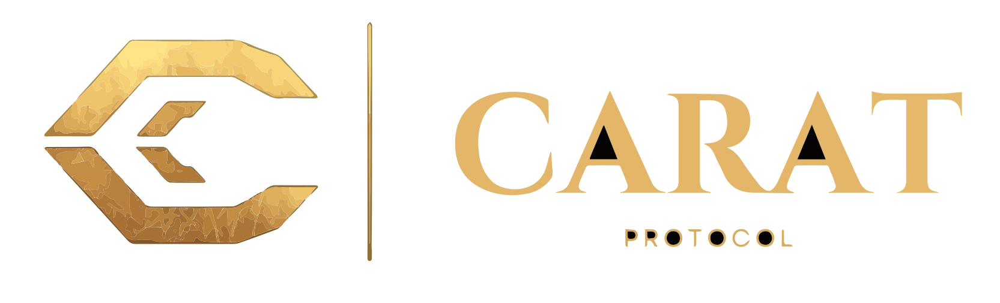

CARAT Index Engine
The main valuation interface for HACD search, wallet scan, filtering and explorer-backed modal details.

CARAT Protocol on GitHub
This GitHub page is designed as a clean public-facing surface for the CARAT ecosystem. It explains what CARAT does, where the data comes from, how trust is built and where users can open the live engine or install public tools like the Chrome extension.
Search HACD names, scan wallets, inspect HIP-5, HIP-8 and HIP-9 layers and open explorer-backed detail views.
Launch engineAdds Open in CARAT Engine to supported explorer.hacash.org pages and routes users directly into the live production engine.
Chrome Web Store review in progressProducts
Keep this surface public, safe and simple. It should market the ecosystem, link to live tools and explain methodology at a high level, without exposing sensitive infrastructure or internal server details.
The main valuation interface for HACD search, wallet scan, filtering and explorer-backed modal details.
Public install route for the browser extension once the Chrome Web Store review is approved.
Short explainers for HIP-5, HIP-8, HIP-9, analyzer parity and the CARAT trust model.
Trust Layer
Downloads
Use this area for the official Chrome Web Store link after approval.
Users who want the full experience should be pointed to the official live engine.
Trusted Links
Roadmap
Simple product overview, methodology summary, public links and extension install area.
Short docs for HIP layers, CARAT scoring logic, Chrome extension behavior and public FAQs.
Use GitHub Releases for extension changelogs, public docs snapshots and installer links.